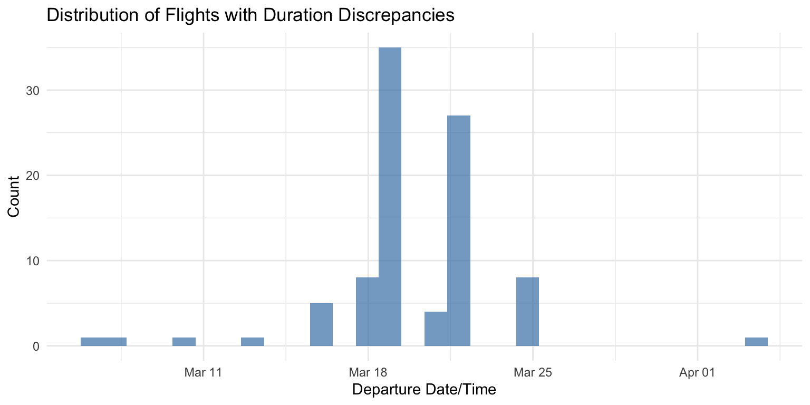
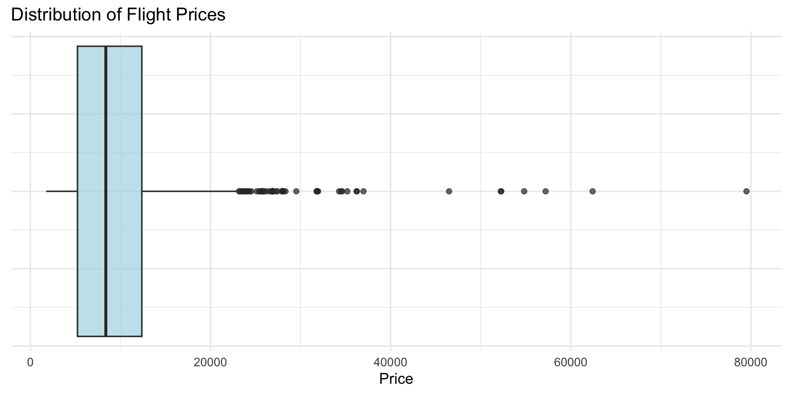
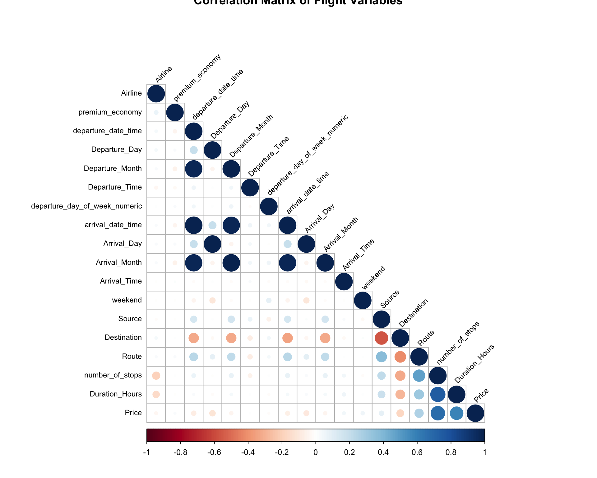
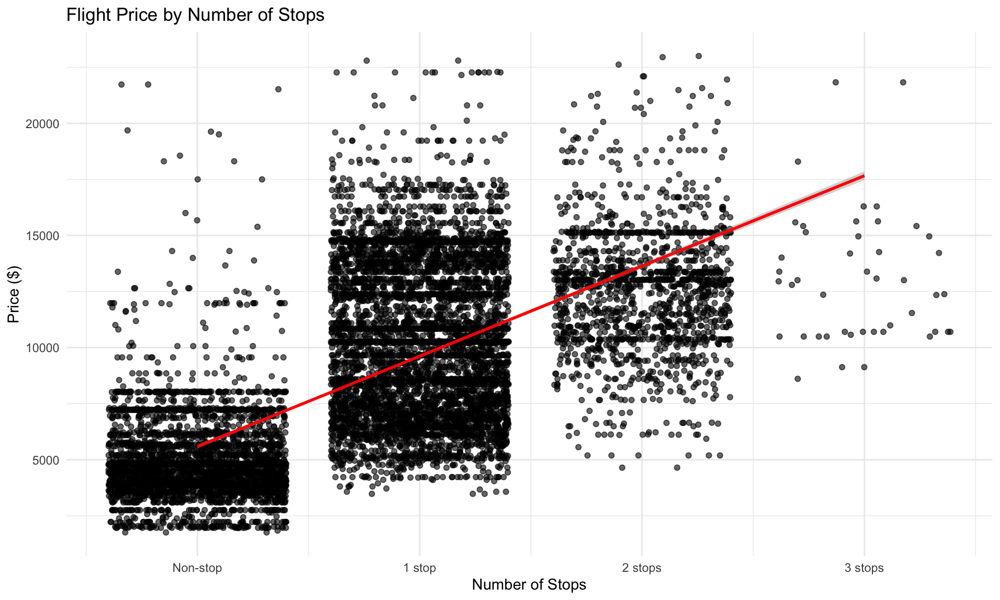
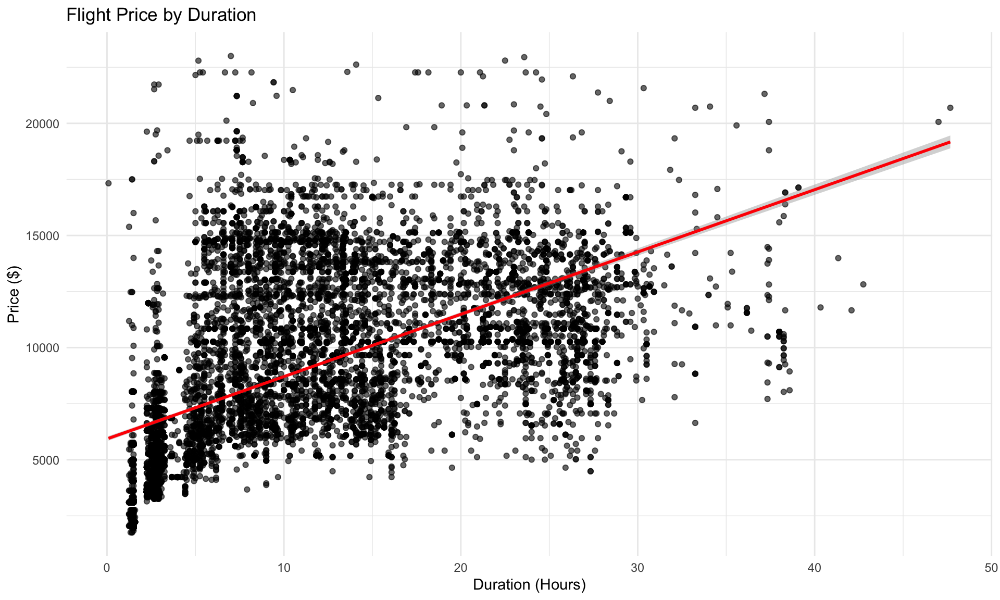
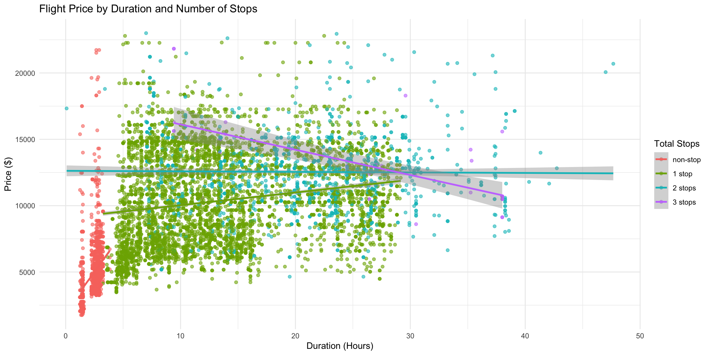
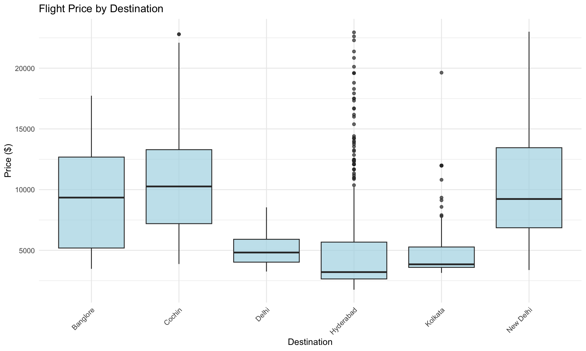
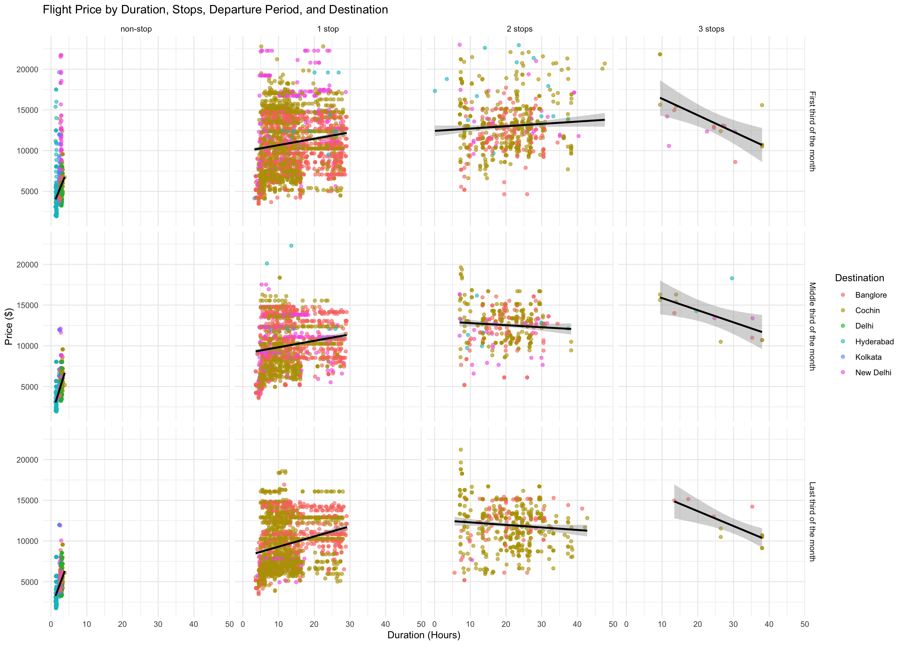
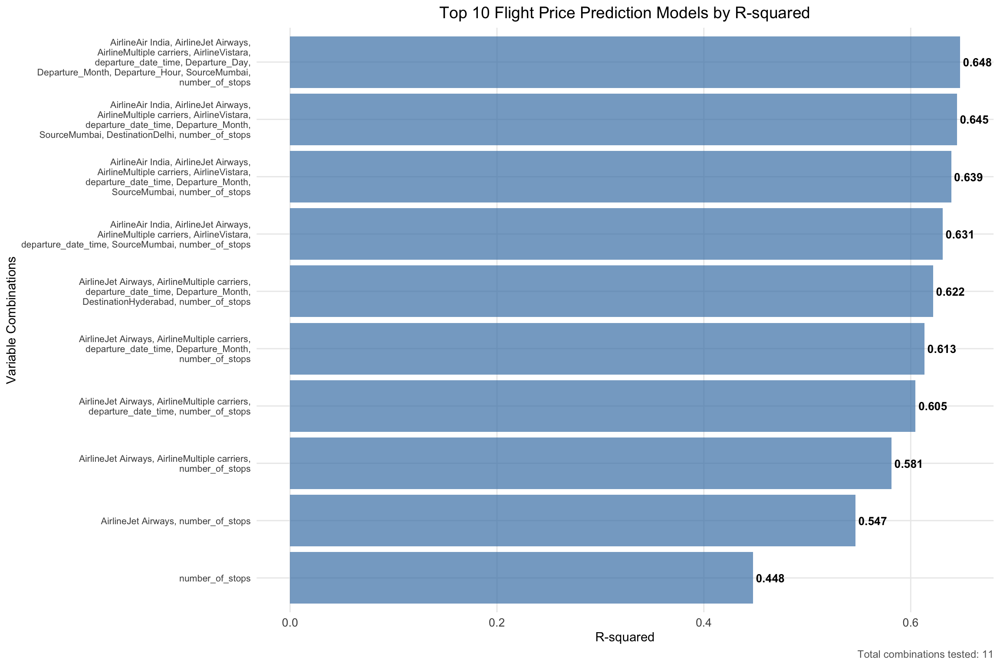

# Accessing and Reading Data
library(googleCloudStorageR) # let's me pull in the data from GCP
library(readxl) # read data
# Data Manipulation
library(tidyverse) # Basic data manipulation function
library(janitor) # Advanced data manipulation function
# Dealing with Dates
library(lubridate)
library(hms)
# Graphing and Analysis
library(corrplot) # graph correlation plots
library(leaps) # fancy regressions
library(broom) # fancy regressions
# Quarto
library(kableExtra)
library(DT) # for interactive tablesFlight EDA
Getting Set Up
Packages
Data
glimpse(flight_data)Rows: 10,683
Columns: 11
$ Airline <chr> "IndiGo", "Air India", "Jet Airways", "IndiGo", "IndiG…
$ Date_of_Journey <chr> "24/03/2019", "1/05/2019", "9/06/2019", "12/05/2019", …
$ Source <chr> "Banglore", "Kolkata", "Delhi", "Kolkata", "Banglore",…
$ Destination <chr> "New Delhi", "Banglore", "Cochin", "Banglore", "New De…
$ Route <chr> "BLR → DEL", "CCU → IXR → BBI → BLR", "DEL → LKO → BOM…
$ Dep_Time <chr> "22:20", "05:50", "09:25", "18:05", "16:50", "09:00", …
$ Arrival_Time <chr> "01:10 22 Mar", "13:15", "04:25 10 Jun", "23:30", "21:…
$ Duration <chr> "2h 50m", "7h 25m", "19h", "5h 25m", "4h 45m", "2h 25m…
$ Total_Stops <chr> "non-stop", "2 stops", "2 stops", "1 stop", "1 stop", …
$ Additional_Info <chr> "No info", "No info", "No info", "No info", "No info",…
$ Price <dbl> 3897, 7662, 13882, 6218, 13302, 3873, 11087, 22270, 11…Data Cleaning
Removing Missing Data and Data with No Variance
Amount of Missingness by Variable
flight_data %>%
summarise_all(~ sum(is.na(.))) %>%
kbl(caption = "Missing Values by Variable") %>%
kable_styling(bootstrap_options = c("striped", "hover", "condensed"),
full_width = FALSE, position = "left")| Airline | Date_of_Journey | Source | Destination | Route | Dep_Time | Arrival_Time | Duration | Total_Stops | Additional_Info | Price |
|---|---|---|---|---|---|---|---|---|---|---|
| 0 | 0 | 0 | 0 | 1 | 0 | 0 | 0 | 1 | 0 | 0 |
Only one flight has 4 stops
flight_data %>%
filter(Total_Stops == "4 stops") %>%
kbl(caption = "Flight with 4 stops") %>%
kable_styling(bootstrap_options = c("striped", "hover", "condensed"),
full_width = FALSE, position = "left") %>%
scroll_box(width = "100%")| Airline | Date_of_Journey | Source | Destination | Route | Dep_Time | Arrival_Time | Duration | Total_Stops | Additional_Info | Price |
|---|---|---|---|---|---|---|---|---|---|---|
| Air India | 01/03/2019 | Banglore | New Delhi | BLR → CCU → BBI → HYD → VGA → DEL | 05:50 | 11:20 02 Mar | 29h 30m | 4 stops | Change airports | 17686 |
Removing Both
flight_data <- flight_data %>%
filter(Total_Stops != "4 stops") %>%
na.omit()Updating Data Formats
flight_data$Airline <- as.factor(flight_data$Airline)
flight_data$Source <- as.factor(flight_data$Source)
flight_data$Destination <- as.factor(flight_data$Destination)
flight_data$Total_Stops <- factor(flight_data$Total_Stops, levels = c("non-stop", "1 stop", "2 stops", "3 stops", "4 stops"))
flight_data$Additional_Info <- as.factor(flight_data$Additional_Info)Dates
Arrival time is date and time but departure time is just the time, so let’s get that fixed.
flight_data1 <- flight_data %>%
mutate(departure_date_time = dmy_hms(paste0(Date_of_Journey, " ", Dep_Time, ":00"))) There is only a date for arrival if it was different than the departure date. Let’s get that fixed so that both departure and arrival have a full date and time set up.
flight_data2 <- flight_data1 %>%
mutate(Arrival_Time_Only = str_extract(Arrival_Time, "^\\d{2}:\\d{2}"), # Pull out just time
Dep_Time = paste0(Dep_Time, ":00"),
Arrival_Time_Only = paste0(Arrival_Time_Only, ":00"),
Arrival_Date = str_extract(Arrival_Time, "\\d{1,2} \\w{3}$") # Pull out just date
) %>%
separate(Arrival_Date, into = c("Arrival_Day", "Arrival_Month"), sep = " ", remove = FALSE) %>%
mutate(Arrival_Month_Num = case_when(Arrival_Month == "Jan" ~ 01, # replacing the words with numbers
Arrival_Month == "Feb" ~ 02,
Arrival_Month == "Mar" ~ 03,
Arrival_Month == "Apr" ~ 04,
Arrival_Month == "May" ~ 05,
Arrival_Month == "Jun" ~ 06,
Arrival_Month == "Jul" ~ 07,
Arrival_Month == "Aug" ~ 08,
Arrival_Month == "Sep" ~ 09,
Arrival_Month == "Oct" ~ 10,
Arrival_Month == "Nov" ~ 11,
Arrival_Month == "Dec" ~ 12)) %>%
separate(Date_of_Journey, # The dates don't have years, so pulling out the departure years as reference
into = c("Departure_Day", "Departure_Month", "Departure_Year"),
sep = "/",
remove = FALSE) %>%
mutate(Arrival_Day = ifelse(!is.na(Arrival_Day), Arrival_Day, as.numeric(Departure_Day)),
Arrival_Month_Num = ifelse(!is.na(Arrival_Month_Num), Arrival_Month_Num, as.numeric(Departure_Month)),
Arrival_Date_combined = paste0(Departure_Year, "-", Arrival_Month_Num, "-", Arrival_Day)) %>%
mutate(arrival_date_time = ymd_hms(paste0(Arrival_Date_combined, " ", Arrival_Time_Only))) %>%
select(-Arrival_Month, -Arrival_Time) %>%
rename(Departure_Time = Dep_Time,
Arrival_Month = Arrival_Month_Num,
Arrival_Time = Arrival_Time_Only) %>%
select(Airline, Date_of_Journey,
departure_date_time, Departure_Day, Departure_Month, Departure_Year, Departure_Time,
arrival_date_time, Arrival_Day, Arrival_Month, Arrival_Time,
Duration,
Source, Destination, Route, Total_Stops, Price, Additional_Info)
flight_data3 <- flight_data2Making sure all the dates are formatted correctly
flight_data3$Departure_Day <- as.numeric(flight_data3$Departure_Day)
flight_data3$Departure_Month <- as.numeric(flight_data3$Departure_Month)
flight_data3$Departure_Year <- as.numeric(flight_data3$Departure_Year)
flight_data3$Arrival_Day <- as.numeric(flight_data3$Arrival_Day)
flight_data3$Departure_Time <- as_hms(flight_data3$Departure_Time)
flight_data3$Arrival_Time <- as_hms(flight_data3$Arrival_Time)
flight_data4 <- flight_data3Let’s add features for day of week and hour of departure
flight_data4$departure_day_of_week <- weekdays(flight_data4$departure_date_time)
flight_data4$Departure_Hour = hour(flight_data4$Departure_Time)I don’t need to care about time zones since all the cities are in the same time zone.
unique(flight_data4$Source)[1] Banglore Kolkata Delhi Chennai Mumbai
Levels: Banglore Chennai Delhi Kolkata Mumbaiunique(flight_data4$Destination)[1] New Delhi Banglore Cochin Kolkata Delhi Hyderabad
Levels: Banglore Cochin Delhi Hyderabad Kolkata New DelhiDuration
First calculating duration
flight_data4 <- flight_data4 %>%
mutate(
Duration_Hours = replace_na(as.numeric(str_extract(Duration, "\\d+(?=h)")), 0) +
replace_na(as.numeric(str_extract(Duration, "\\d+(?=m)")), 0) / 60
)Then examining if calculated duration is the same as provided duration. There are a handful of flights that appear to be different. For some, it seems the arrival is before the departure.
flight_data4 %>%
rowwise() %>%
mutate(calculated_duration = arrival_date_time - departure_date_time,
calculated_duration_hours = as.numeric(calculated_duration, units = "hours")
) %>%
mutate(difference_between_calculation_file = Duration_Hours - calculated_duration_hours,
abs_difference_between_calculation_file = abs(difference_between_calculation_file)) %>%
filter(difference_between_calculation_file > 1) %>%
select(departure_date_time, arrival_date_time, calculated_duration_hours, Duration_Hours, difference_between_calculation_file) %>%
head(10) %>%
kbl(caption = "Flights with Duration Discrepancies",
col.names = c("Departure", "Arrival", "Calculated Hours", "File Hours", "Difference")) %>%
kable_styling(bootstrap_options = c("striped", "hover", "condensed"),
full_width = FALSE, position = "left")| Departure | Arrival | Calculated Hours | File Hours | Difference |
|---|---|---|---|---|
| 2019-03-24 22:20:00 | 2019-03-22 01:10:00 | -69.16667 | 2.833333 | 72 |
| 2019-03-21 22:00:00 | 2019-03-19 13:20:00 | -56.66667 | 15.333333 | 72 |
| 2019-03-18 14:05:00 | 2019-03-16 05:05:00 | -57.00000 | 15.000000 | 72 |
| 2019-03-18 16:55:00 | 2019-03-16 09:00:00 | -55.91667 | 16.083333 | 72 |
| 2019-03-21 22:00:00 | 2019-03-19 10:50:00 | -59.16667 | 12.833333 | 72 |
| 2019-03-15 22:55:00 | 2019-03-13 05:05:00 | -65.83333 | 6.166667 | 72 |
| 2019-03-21 11:50:00 | 2019-03-19 08:55:00 | -50.91667 | 21.083333 | 72 |
| 2019-03-18 07:00:00 | 2019-03-16 07:40:00 | -47.33333 | 24.666667 | 72 |
| 2019-03-18 11:05:00 | 2019-03-16 22:10:00 | -36.91667 | 35.083333 | 72 |
| 2019-03-21 19:35:00 | 2019-03-19 00:35:00 | -67.00000 | 5.000000 | 72 |
No time-based patterns to wonky durations.
flight_data4 %>%
rowwise() %>%
mutate(calculated_duration = arrival_date_time - departure_date_time,
calculated_duration_hours = as.numeric(calculated_duration, units = "hours")
) %>%
mutate(difference_between_calculation_file = Duration_Hours - calculated_duration_hours,
abs_difference_between_calculation_file = abs(difference_between_calculation_file)) %>%
filter(difference_between_calculation_file > 1) %>%
ggplot(aes(x = departure_date_time)) +
geom_histogram(bins = 30, fill = "steelblue", alpha = 0.7) +
labs(title = "Distribution of Flights with Duration Discrepancies",
x = "Departure Date/Time",
y = "Count") +
theme_minimal()
Remove data where the arrival was before the departure.
flight_data4 <- flight_data4 %>%
rowwise() %>%
mutate(wonky_times = case_when(arrival_date_time > departure_date_time ~ "keep",
TRUE ~ "remove"
)) %>%
filter(wonky_times == "keep") %>%
select(-wonky_times) %>%
ungroup() Exploratory Data Analysis
Price Outliers
Number of Price Outliers
nrow(rstatix::identify_outliers(data = flight_data4, variable = "Price"))[1] 90Visualizations of outliers
flight_data4 %>%
ggplot(aes(x = Price)) +
geom_boxplot(fill = "lightblue", alpha = 0.7) +
labs(title = "Distribution of Flight Prices",
x = "Price") +
theme_minimal() +
theme(axis.text.y = element_blank(),
axis.ticks.y = element_blank())
An outlier is a value 1.5 times that of the IQR. Below, we see outliers are prices above $23,170.
outlier_summary <- rstatix::identify_outliers(data = flight_data4, variable = "Price")
# Create a more readable summary table
outlier_summary %>%
select(Airline, Date_of_Journey, departure_date_time, Price, is.outlier, is.extreme) %>%
head(10) %>%
kbl(caption = "Sample of Price Outliers",
col.names = c("Airline", "Journey Date", "Departure Time", "Price", "Outlier", "Extreme")) %>%
kable_styling(bootstrap_options = c("striped", "hover", "condensed"),
full_width = FALSE, position = "left")| Airline | Journey Date | Departure Time | Price | Outlier | Extreme |
|---|---|---|---|---|---|
| Air India | 1/03/2019 | 2019-03-01 23:00:00 | 27430 | TRUE | FALSE |
| Multiple carriers | 1/03/2019 | 2019-03-01 12:50:00 | 36983 | TRUE | TRUE |
| Jet Airways | 01/03/2019 | 2019-03-01 08:55:00 | 26890 | TRUE | FALSE |
| Jet Airways | 01/03/2019 | 2019-03-01 07:00:00 | 26890 | TRUE | FALSE |
| Air India | 6/03/2019 | 2019-03-06 09:40:00 | 25139 | TRUE | FALSE |
| Jet Airways Business | 01/03/2019 | 2019-03-01 05:45:00 | 52229 | TRUE | TRUE |
| Air India | 01/03/2019 | 2019-03-01 08:50:00 | 26743 | TRUE | FALSE |
| Jet Airways | 01/03/2019 | 2019-03-01 05:45:00 | 26890 | TRUE | FALSE |
| Jet Airways | 01/03/2019 | 2019-03-01 22:50:00 | 25735 | TRUE | FALSE |
| Jet Airways | 01/03/2019 | 2019-03-01 05:45:00 | 27992 | TRUE | FALSE |
Removing the outliers.
flight_data5 <- flight_data4 %>%
filter(Price < 23170)Correlation Matrix
Including the variables in my correlation Matrix
corr.data <- flight_data5 %>%
mutate(departure_day_of_week_numeric = case_when(departure_day_of_week == "Sunday" ~ 1,
departure_day_of_week == "Monday" ~ 2,
departure_day_of_week == "Tuesday" ~ 3,
departure_day_of_week == "Wednesday" ~ 4,
departure_day_of_week == "Thursday" ~ 5,
departure_day_of_week == "Friday" ~ 6,
departure_day_of_week == "Saturday" ~ 7),
weekend = case_when(departure_day_of_week == "Sunday" | departure_day_of_week == "Saturday" ~ "Weekend",
TRUE ~ "Weekday"),
number_of_stops = case_when(Total_Stops == "non-stop" ~ 0,
Total_Stops == "1 stop" ~ 1,
Total_Stops == "2 stops" ~ 2,
Total_Stops == "3 stops" ~ 3,
Total_Stops == "4 stops" ~ 4),
premium_economy = str_detect(Airline, "Premium")) %>%
select(Airline, premium_economy, departure_date_time, Departure_Day, Departure_Month, Departure_Time,
departure_day_of_week_numeric, arrival_date_time, Arrival_Day, Arrival_Month, Arrival_Time,
weekend, Source, Destination, Route, number_of_stops,
Duration_Hours, Price) %>%
data.matrix()
corr_matrix <- round(cor(corr.data, use="pairwise.complete.obs", method="pearson"), 2)
corrplot(corr_matrix, method="circle", type="lower", tl.col = "black", tl.cex = .75,
tl.srt = 45, title = "Correlation Matrix of Flight Variables")
Let’s look at just the Price relationships.
corr_matrix_df <- rstatix::cor_gather(corr_matrix)
price_correlations <- corr_matrix_df %>%
filter(var1 == 'Price') %>%
arrange(desc(abs(cor))) %>%
mutate(cor = round(cor, 3))
price_correlations %>%
kbl(caption = "Price Correlations with Other Variables",
col.names = c("Variable 1", "Variable 2", "Correlation")) %>%
kable_styling(bootstrap_options = c("striped", "hover", "condensed"),
full_width = FALSE, position = "left")| Variable 1 | Variable 2 | Correlation |
|---|---|---|
| Price | Price | 1.00 |
| Price | number_of_stops | 0.67 |
| Price | Duration_Hours | 0.58 |
| Price | Route | 0.26 |
| Price | Destination | -0.18 |
| Price | Departure_Day | -0.12 |
| Price | Arrival_Day | -0.10 |
| Price | departure_date_time | -0.08 |
| Price | Source | 0.08 |
| Price | arrival_date_time | -0.07 |
| Price | Departure_Month | -0.05 |
| Price | Arrival_Month | -0.05 |
| Price | weekend | 0.05 |
| Price | Airline | -0.04 |
| Price | Arrival_Time | 0.04 |
| Price | premium_economy | 0.02 |
| Price | departure_day_of_week_numeric | -0.02 |
| Price | Departure_Time | 0.00 |
Graphing Strongest Relationships
Price by total stops
flight_data5 %>%
filter(!is.na(Total_Stops)) %>%
mutate(number_of_stops = case_when(Total_Stops == "non-stop" ~ 0,
Total_Stops == "1 stop" ~ 1,
Total_Stops == "2 stops" ~ 2,
Total_Stops == "3 stops" ~ 3,
Total_Stops == "4 stops" ~ 4)) %>%
ggplot(aes(x = number_of_stops, y = Price)) +
geom_point(position = 'jitter', alpha = 0.6) +
geom_smooth(method = 'lm', color = "red", se = TRUE) +
labs(title = "Flight Price by Number of Stops",
x = "Number of Stops",
y = "Price ($)") +
theme_minimal() +
scale_x_continuous(breaks = 0:3, labels = c("Non-stop", "1 stop", "2 stops", "3 stops"))
Duration of flight
flight_data5 %>%
filter(!is.na(Duration_Hours)) %>%
ggplot(aes(x = Duration_Hours, y = Price)) +
geom_point(alpha = 0.6) +
geom_smooth(method = 'lm', color = "red", se = TRUE) +
labs(title = "Flight Price by Duration",
x = "Duration (Hours)",
y = "Price ($)") +
theme_minimal()
Both number of stops and duration
flight_data5 %>%
filter(!is.na(Duration_Hours)) %>%
filter(!is.na(Total_Stops)) %>%
ggplot(aes(x = Duration_Hours, y = Price, color = Total_Stops)) +
geom_point(alpha = 0.6) +
geom_smooth(method = 'lm', se = TRUE) +
labs(title = "Flight Price by Duration and Number of Stops",
x = "Duration (Hours)",
y = "Price ($)",
color = "Total Stops") +
theme_minimal() +
theme(legend.position = "right")
Destination
flight_data5 %>%
filter(!is.na(Destination)) %>%
ggplot(aes(x = Destination, y = Price)) +
geom_boxplot(fill = "lightblue", alpha = 0.7) +
labs(title = "Flight Price by Destination",
x = "Destination",
y = "Price ($)") +
theme_minimal() +
theme(axis.text.x = element_text(angle = 45, hjust = 1))
Bringing multiple variables together
flight_data5 %>%
mutate(Departure_Day_categorical = case_when(Departure_Day <= 10 ~ "First third of the month",
Departure_Day >= 20 ~ "Last third of the month",
TRUE ~ "Middle third of the month"),
Departure_Day_categorical = factor(Departure_Day_categorical, levels = c("First third of the month",
"Middle third of the month",
"Last third of the month"))) %>%
ggplot(aes(x = Duration_Hours, y = Price)) +
geom_point(aes(color = Destination), alpha = 0.6) +
geom_smooth(method = 'lm', color = "black", se = TRUE) +
facet_grid(rows = vars(Departure_Day_categorical),
cols = vars(Total_Stops)) +
labs(title = "Flight Price by Duration, Stops, Departure Period, and Destination",
x = "Duration (Hours)",
y = "Price ($)",
color = "Destination") +
theme_minimal() +
theme(legend.position = "right",
strip.text = element_text(size = 9))
Regressions like a statistician
As a statistician, I would pick the variables that have the strongest relationships with the outcome, don’t have too much multicollinearity, and a theoretical reason to influence Price.
From below, we can see that the number of stops significantly predicts Price when controlling for other variables, as does duration, departure day, and most of the arrival cities.
This model predicts about 52% of the variance in total Price, which isn’t bad! But I think it could be better.
regression.flight <- lm(Price ~ Total_Stops + Duration_Hours +
Departure_Day + Destination, data = flight_data5)
# Create a tidy summary
regression_summary <- tidy(regression.flight) %>%
mutate(across(where(is.numeric), ~ round(.x, 4)))
regression_summary %>%
kbl(caption = "Statistician's Regression Model Results",
col.names = c("Term", "Estimate", "Std Error", "t-statistic", "p-value")) %>%
kable_styling(bootstrap_options = c("striped", "hover", "condensed"),
full_width = FALSE, position = "left")| Term | Estimate | Std Error | t-statistic | p-value |
|---|---|---|---|---|
| (Intercept) | 5375.6320 | 98.6235 | 54.5066 | 0.0000 |
| Total_Stops1 stop | 4495.5795 | 106.6337 | 42.1591 | 0.0000 |
| Total_Stops2 stops | 6294.4869 | 147.2948 | 42.7339 | 0.0000 |
| Total_Stops3 stops | 6264.0658 | 443.6110 | 14.1206 | 0.0000 |
| Duration_Hours | 67.0555 | 4.9507 | 13.5447 | 0.0000 |
| Departure_Day | -48.9542 | 3.2805 | -14.9229 | 0.0000 |
| DestinationCochin | 155.4857 | 71.4608 | 2.1758 | 0.0296 |
| DestinationDelhi | 240.7074 | 116.4272 | 2.0675 | 0.0387 |
| DestinationHyderabad | -564.8083 | 133.2968 | -4.2372 | 0.0000 |
| DestinationKolkata | -70.2883 | 167.8346 | -0.4188 | 0.6754 |
| DestinationNew Delhi | 1855.5773 | 114.5948 | 16.1925 | 0.0000 |
# Model summary statistics
glance(regression.flight) %>%
select(r.squared, adj.r.squared, sigma, statistic, p.value, df, nobs) %>%
mutate(across(where(is.numeric), ~ round(.x, 4))) %>%
kbl(caption = "Model Summary Statistics") %>%
kable_styling(bootstrap_options = c("striped", "hover", "condensed"),
full_width = FALSE, position = "left")| r.squared | adj.r.squared | sigma | statistic | p.value | df | nobs |
|---|---|---|---|---|---|---|
| 0.5217 | 0.5213 | 2815.961 | 1144.154 | 0 | 10 | 10499 |
Regressions like a Data Scientist
If I free myself from needing to rely on theory to make predictions, I would go with an All Subsets regression approach, which essentially tests every combination of possible variables, calculates the variance predicted and various model fit statistics (AIC, BIC, etc.) and selects the model with the highest predicted variances and lowest model fit statistics.
While I’ve done this analysis before in SPSS, I had not yet done it in R, so I had Claude help me write the code.
Preparing Data for All Subsets Regression
flight_data6 <- flight_data5 %>%
mutate(departure_day_of_week_numeric = case_when(departure_day_of_week == "Sunday" ~ 1,
departure_day_of_week == "Monday" ~ 2,
departure_day_of_week == "Tuesday" ~ 3,
departure_day_of_week == "Wednesday" ~ 4,
departure_day_of_week == "Thursday" ~ 5,
departure_day_of_week == "Friday" ~ 6,
departure_day_of_week == "Saturday" ~ 7),
number_of_stops = case_when(Total_Stops == "non-stop" ~ 0,
Total_Stops == "1 stop" ~ 1,
Total_Stops == "2 stops" ~ 2,
Total_Stops == "3 stops" ~ 3,
Total_Stops == "4 stops" ~ 4),
weekend = case_when(departure_day_of_week == "Sunday" | departure_day_of_week == "Saturday" ~ "Weekend",
TRUE ~ "Weekday"))First, I identify the variables in the model.
predictor_variables <- c("Airline", "departure_date_time", "Departure_Day",
"departure_day_of_week_numeric", "Departure_Month",
"Departure_Hour", "Source", "Destination",
"number_of_stops", "Duration_Hours")
outcome_variable <- "Price"Run the All Subsets regression analysis.
flight_all_subsets_leaps <- function(data = flight_data6, outcome_var = "Price",
predictor_vars = predictor_variables, method = "exhaustive") {
# Check if data exists
if (!exists("flight_data6")) {
stop("flight_data6 dataset not found. Please load your data first.")
}
# Remove rows with missing values in key variables
analysis_data <- data %>%
select(all_of(c(outcome_var, predictor_vars))) %>%
na.omit()
cat("Analysis dataset created with", nrow(analysis_data), "complete observations\n")
cat("Original dataset had", nrow(data), "observations\n\n")
# Create formula
formula_str <- paste(outcome_var, "~", paste(predictor_vars, collapse = " + "))
formula_obj <- as.formula(formula_str)
# Run all subsets regression
regsubsets_result <- regsubsets(formula_obj,
data = analysis_data,
nbest = 1, # Keep best model of each size
nvmax = length(predictor_vars), # Max variables
method = method) # "exhaustive", "forward", "backward"
# Extract results
summary_results <- summary(regsubsets_result)
# Create results data frame
results_df <- data.frame(
n_variables = 1:length(summary_results$rsq),
r_squared = summary_results$rsq,
adj_r_squared = summary_results$adjr2,
cp = summary_results$cp,
bic = summary_results$bic,
variables_included = apply(summary_results$which[,-1], 1, function(x) {
paste(names(x)[x], collapse = ", ")
})
)
# Find best models by different criteria
best_rsq_idx <- which.max(results_df$r_squared)
best_adj_rsq_idx <- which.max(results_df$adj_r_squared)
best_cp_idx <- which.min(results_df$cp)
best_bic_idx <- which.min(results_df$bic)
# Add indicator columns
results_df$best_rsq <- 1:nrow(results_df) == best_rsq_idx
results_df$best_adj_rsq <- 1:nrow(results_df) == best_adj_rsq_idx
results_df$best_cp <- 1:nrow(results_df) == best_cp_idx
results_df$best_bic <- 1:nrow(results_df) == best_bic_idx
return(list(
results = results_df,
regsubsets_object = regsubsets_result,
analysis_data = analysis_data,
best_models = list(
highest_rsq = results_df[best_rsq_idx, ],
best_adj_rsq = results_df[best_adj_rsq_idx, ],
best_cp = results_df[best_cp_idx, ],
best_bic = results_df[best_bic_idx, ]
)
))
}Select the best model
plot_flight_model_comparison <- function(results_df, top_n = 15) {
# Get top models
top_models <- head(results_df, top_n)
# Create the plot
p <- top_models %>%
mutate(variables_wrapped = str_wrap(variables_included, width = 50)) %>%
mutate(variables_wrapped = fct_reorder(variables_wrapped, r_squared)) %>%
ggplot(aes(x = variables_wrapped, y = r_squared)) +
geom_bar(stat = 'identity', fill = 'steelblue', alpha = 0.7) +
geom_text(aes(label = paste0(round(r_squared, 3))),
hjust = -.1, size = 3.5, color = "black", fontface = 'bold') +
coord_flip() +
theme_minimal() +
theme(plot.title = element_text(size = 14, hjust = 0.5),
plot.subtitle = element_text(hjust = 0.5),
plot.caption = element_text(size = 9, color = "#666666"),
axis.text.x = element_text(size = 10),
axis.text.y = element_text(size = 8),
axis.title.y = element_text(size = 11),
axis.title.x = element_text(size = 11),
panel.grid.minor = element_blank()) +
labs(title = paste("Top", top_n, "Flight Price Prediction Models by R-squared"),
x = "Variable Combinations",
y = "R-squared",
caption = paste("Total combinations tested:", nrow(results_df)))
return(p)
}Get details on the best model.
get_best_flight_model_details <- function(data = flight_data6, outcome_var = "Price", model_variables_string) {
# Parse the variable string to extract original variable names
# This handles the dummy variables created by R for categorical variables
# Extract original variable names from the dummy variable names
original_vars <- c()
# Check for each of our original predictor variables
if (grepl("Airline", model_variables_string)) {
original_vars <- c(original_vars, "Airline")
}
if (grepl("departure_date_time", model_variables_string)) {
original_vars <- c(original_vars, "departure_date_time")
}
if (grepl("Departure_Day", model_variables_string)) {
original_vars <- c(original_vars, "Departure_Day")
}
if (grepl("departure_day_of_week_numeric", model_variables_string)) {
original_vars <- c(original_vars, "departure_day_of_week_numeric")
}
if (grepl("Departure_Month", model_variables_string)) {
original_vars <- c(original_vars, "Departure_Month")
}
if (grepl("Departure_Hour", model_variables_string)) {
original_vars <- c(original_vars, "Departure_Hour")
}
if (grepl("Source", model_variables_string)) {
original_vars <- c(original_vars, "Source")
}
if (grepl("Destination", model_variables_string)) {
original_vars <- c(original_vars, "Destination")
}
if (grepl("number_of_stops", model_variables_string)) {
original_vars <- c(original_vars, "number_of_stops")
}
if (grepl("Duration_Hours", model_variables_string)) {
original_vars <- c(original_vars, "Duration_Hours")
}
# Remove rows with missing values using original variable names
analysis_data <- data %>%
select(all_of(c(outcome_var, original_vars))) %>%
na.omit()
# Create formula with original variables
formula_str <- paste(outcome_var, "~", paste(original_vars, collapse = " + "))
# Fit the model
best_model <- lm(as.formula(formula_str), data = analysis_data)
# Get detailed summary
model_summary <- summary(best_model)
cat("=== BEST FLIGHT PRICE PREDICTION MODEL ===\n")
cat("Original Variables Used:", paste(original_vars, collapse = ", "), "\n")
cat("R-squared:", round(model_summary$r.squared, 4), "\n")
cat("Adjusted R-squared:", round(model_summary$adj.r.squared, 4), "\n")
cat("F-statistic:", round(model_summary$fstatistic[1], 4), "\n")
cat("P-value:", format.pval(pf(model_summary$fstatistic[1],
model_summary$fstatistic[2],
model_summary$fstatistic[3],
lower.tail = FALSE)), "\n")
cat("Number of observations:", nrow(analysis_data), "\n\n")
return(best_model)
}Final Results
if (exists("flight_data6")) {
cat("=== RUNNING ALL SUBSETS REGRESSION ON FLIGHT PRICE DATA ===\n\n")
# Method 1: Using leaps package (recommended)
cat("Running analysis with leaps package...\n")
leaps_results <- flight_all_subsets_leaps()
# Get detailed results for the model with highest R-squared
best_model_rsq <- get_best_flight_model_details(model_variables_string = leaps_results$best_models$highest_rsq$variables_included)
} else {
cat("ERROR: flight_data6 dataset not found!\n")
}Results Summary - All Models Ranked by Number of Variables:
# Display results summary in a nice table
if (exists("leaps_results")) {
leaps_results$results %>%
select(n_variables, r_squared, adj_r_squared, cp, bic) %>%
mutate(across(where(is.numeric), ~ round(.x, 4))) %>%
kbl(caption = "All Subsets Regression Results Summary",
col.names = c("# Variables", "R-squared", "Adj R-squared", "Cp", "BIC")) %>%
kable_styling(bootstrap_options = c("striped", "hover", "condensed"),
full_width = FALSE, position = "left")
}| # Variables | R-squared | Adj R-squared | Cp | BIC |
|---|---|---|---|---|
| 1 | 0.4476 | 0.4475 | 6422.2900 | -6211.793 |
| 2 | 0.5466 | 0.5465 | 3392.8310 | -8275.743 |
| 3 | 0.5815 | 0.5814 | 2325.4378 | -9107.878 |
| 4 | 0.6046 | 0.6045 | 1618.0085 | -9696.474 |
| 5 | 0.6134 | 0.6132 | 1351.7868 | -9922.428 |
| 6 | 0.6217 | 0.6215 | 1098.6399 | -10141.915 |
| 7 | 0.6310 | 0.6308 | 816.8072 | -10393.116 |
| 8 | 0.6392 | 0.6389 | 567.8010 | -10619.704 |
| 9 | 0.6447 | 0.6444 | 400.7432 | -10772.332 |
| 10 | 0.6478 | 0.6475 | 308.6325 | -10854.285 |
| 11 | 0.6518 | 0.6514 | 189.0715 | -10964.029 |
Best Models by Different Criteria:
if (exists("leaps_results")) {
# Create a summary of best models
best_models_summary <- data.frame(
Criterion = c("Highest R-squared", "Best Adjusted R-squared", "Best BIC"),
Variables = c(leaps_results$best_models$highest_rsq$n_variables,
leaps_results$best_models$best_adj_rsq$n_variables,
leaps_results$best_models$best_bic$n_variables),
R_squared = c(leaps_results$best_models$highest_rsq$r_squared,
leaps_results$best_models$best_adj_rsq$r_squared,
leaps_results$best_models$best_bic$r_squared),
Adj_R_squared = c(leaps_results$best_models$highest_rsq$adj_r_squared,
leaps_results$best_models$best_adj_rsq$adj_r_squared,
leaps_results$best_models$best_bic$adj_r_squared),
BIC = c(leaps_results$best_models$highest_rsq$bic,
leaps_results$best_models$best_adj_rsq$bic,
leaps_results$best_models$best_bic$bic)
)
best_models_summary %>%
mutate(across(where(is.numeric), ~ round(.x, 4))) %>%
kbl(caption = "Best Models by Different Criteria") %>%
kable_styling(bootstrap_options = c("striped", "hover", "condensed"),
full_width = FALSE, position = "left")
}| Criterion | Variables | R_squared | Adj_R_squared | BIC |
|---|---|---|---|---|
| Highest R-squared | 11 | 0.6518 | 0.6514 | -10964.03 |
| Best Adjusted R-squared | 11 | 0.6518 | 0.6514 | -10964.03 |
| Best BIC | 11 | 0.6518 | 0.6514 | -10964.03 |
Visualization of Top Models:
if (exists("leaps_results")) {
plot_comparison <- plot_flight_model_comparison(leaps_results$results, top_n = 10)
print(plot_comparison)
}
Final Model Details:
The final model would be:
ds.regression.flight <- lm(Price ~ Airline + departure_date_time +
Departure_Day + Departure_Month + Departure_Hour +
Destination + number_of_stops, data = flight_data6)
# Create a clean coefficient table
final_model_tidy <- tidy(ds.regression.flight) %>%
mutate(
estimate = round(estimate, 2),
std.error = round(std.error, 2),
statistic = round(statistic, 2),
p.value = case_when(
p.value < 0.001 ~ "< 0.001",
p.value < 0.01 ~ sprintf("%.3f", p.value),
TRUE ~ sprintf("%.3f", p.value)
),
significance = case_when(
as.numeric(ifelse(p.value == "< 0.001", 0, p.value)) < 0.001 ~ "***",
as.numeric(ifelse(p.value == "< 0.001", 0, p.value)) < 0.01 ~ "**",
as.numeric(ifelse(p.value == "< 0.001", 0, p.value)) < 0.05 ~ "*",
as.numeric(ifelse(p.value == "< 0.001", 0, p.value)) < 0.1 ~ ".",
TRUE ~ ""
)
)
final_model_tidy %>%
kbl(caption = "Final Model Coefficients",
col.names = c("Term", "Estimate", "Std Error", "t-statistic", "p-value", "Sig.")) %>%
kable_styling(bootstrap_options = c("striped", "hover", "condensed"),
full_width = FALSE, position = "left") %>%
scroll_box(width = "100%", height = "400px")| Term | Estimate | Std Error | t-statistic | p-value | Sig. |
|---|---|---|---|---|---|
| (Intercept) | 32819017.61 | 2167319.94 | 15.14 | < 0.001 | *** |
| AirlineAir India | 1599.77 | 150.69 | 10.62 | < 0.001 | *** |
| AirlineGoAir | 122.11 | 218.23 | 0.56 | 0.576 | |
| AirlineIndiGo | 272.34 | 145.07 | 1.88 | 0.061 | . |
| AirlineJet Airways | 4172.94 | 142.02 | 29.38 | < 0.001 | *** |
| AirlineMultiple carriers | 3370.60 | 157.07 | 21.46 | < 0.001 | *** |
| AirlineMultiple carriers Premium economy | 3990.49 | 677.49 | 5.89 | < 0.001 | *** |
| AirlineSpiceJet | -235.93 | 159.91 | -1.48 | 0.140 | |
| AirlineTrujet | -2278.58 | 2390.37 | -0.95 | 0.340 | |
| AirlineVistara | 2194.46 | 173.63 | 12.64 | < 0.001 | *** |
| AirlineVistara Premium economy | 3511.57 | 1384.23 | 2.54 | 0.011 | * |
| departure_date_time | -0.02 | 0.00 | -15.14 | < 0.001 | *** |
| Departure_Day | 1772.11 | 120.84 | 14.66 | < 0.001 | *** |
| Departure_Month | 55906.52 | 3715.64 | 15.05 | < 0.001 | *** |
| Departure_Hour | 94.06 | 6.53 | 14.41 | < 0.001 | *** |
| DestinationCochin | 271.73 | 65.96 | 4.12 | < 0.001 | *** |
| DestinationDelhi | -803.29 | 92.14 | -8.72 | < 0.001 | *** |
| DestinationHyderabad | -1822.60 | 108.58 | -16.79 | < 0.001 | *** |
| DestinationKolkata | -195.79 | 138.52 | -1.41 | 0.158 | |
| DestinationNew Delhi | 1025.76 | 106.48 | 9.63 | < 0.001 | *** |
| number_of_stops | 2588.84 | 53.10 | 48.75 | < 0.001 | *** |
# Model summary statistics
model_summary_stats <- glance(ds.regression.flight) %>%
select(r.squared, adj.r.squared, sigma, statistic, p.value, df, nobs) %>%
mutate(across(where(is.numeric), ~ round(.x, 4))) %>%
pivot_longer(everything(), names_to = "Statistic", values_to = "Value")
model_summary_stats %>%
kbl(caption = "Final Model Summary Statistics") %>%
kable_styling(bootstrap_options = c("striped", "hover", "condensed"),
full_width = FALSE, position = "left")| Statistic | Value |
|---|---|
| r.squared | 0.6577 |
| adj.r.squared | 0.6570 |
| sigma | 2383.5769 |
| statistic | 1006.4629 |
| p.value | 0.0000 |
| df | 20.0000 |
| nobs | 10499.0000 |
Key Findings
Model Performance: - The final model explains approximately 65.8% of the variance in flight prices - This represents a significant improvement over the traditional statistical approach (52.2%) - The model includes 7 key variables: Airline, departure date/time, departure day, departure month, departure hour, destination, and number of stops
Most Important Predictors: 1. Number of stops - Strongest predictor with highest correlation (0.67) 2. Duration of flight - Second strongest predictor (0.58) 3. Airline - Different airlines have significantly different pricing strategies 4. Destination - Certain destinations command premium prices 5. Temporal factors - Time of day, day of month, and month all influence pricing
Business Insights: - Non-stop flights command premium pricing - Jet Airways and premium carriers charge significantly more - New Delhi destinations are more expensive than other cities - Later departure times and certain months show price variations